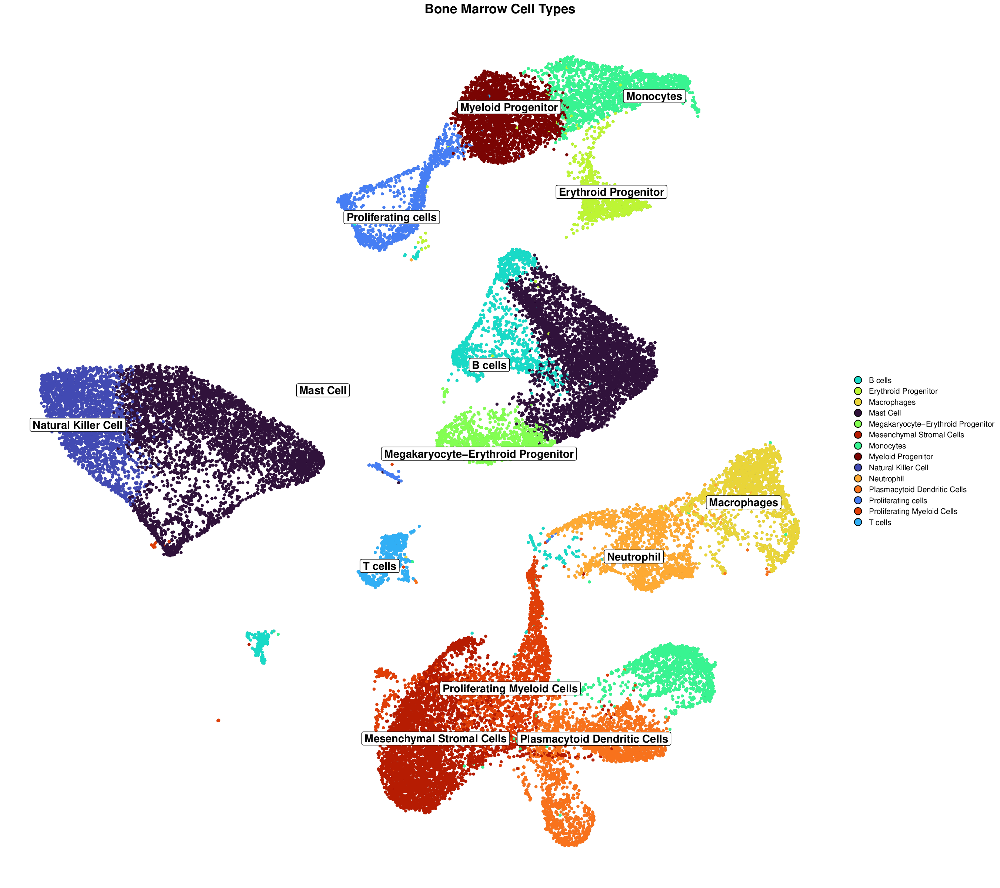

Visualization Guide
Chen Yang
2025-04-30
Source:vignettes/06-visualization-guide.Rmd
06-visualization-guide.Rmd
Visualization Guide
This guide provides detailed instructions for visualizing mLLMCelltype results. Creating effective visualizations is crucial for interpreting cell type annotations and communicating uncertainty metrics in your single-cell RNA sequencing analysis.
Basic Visualization Concepts
mLLMCelltype provides three key types of information that can be visualized:
- Cell Type Annotations: The final cell type labels assigned to each cluster
- Consensus Proportion: A measure of agreement among models (0-1)
- Shannon Entropy: A measure of uncertainty in the annotations (lower is better)
These can be visualized separately or combined into informative multi-panel figures.
Integrating with Seurat
Adding mLLMCelltype Results to Seurat Objects
Before visualization, you need to add the mLLMCelltype results to your Seurat object:
library(Seurat)
library(mLLMCelltype)
library(ggplot2)
library(patchwork)
# Assuming you have a Seurat object named 'seurat_obj' and consensus results
# First, check the structure of consensus_results
# Print the structure of consensus_results to understand its format
# str(consensus_results)
# print(names(consensus_results))
# print(names(consensus_results$final_annotations))
# Get cluster IDs from Seurat object
cluster_ids <- unique(as.character(Idents(seurat_obj)))
cat("Cluster IDs in Seurat object:", paste(cluster_ids, collapse=", "), "\n")
# Convert final_annotations to a vector if it's a list
final_annotations <- unlist(consensus_results$final_annotations)
cat("Final annotations:", paste(names(final_annotations), collapse=", "), "\n")
# Create a mapping between cluster IDs and annotations
annotation_map <- vector("character", length(cluster_ids))
names(annotation_map) <- cluster_ids
# First, try direct mapping where cluster ID matches the name in final_annotations
for (i in seq_along(cluster_ids)) {
cluster_id <- cluster_ids[i]
# Check if this cluster ID exists in final_annotations names
if (cluster_id %in% names(final_annotations)) {
annotation_map[cluster_id] <- final_annotations[cluster_id]
}
}
# For any remaining unmapped clusters, try to infer the mapping
unmapped <- is.na(annotation_map) | annotation_map == ""
if (any(unmapped)) {
unmapped_ids <- names(annotation_map)[unmapped]
cat("Unmapped cluster IDs:", paste(unmapped_ids, collapse=", "), "\n")
# If we have the same number of unmapped clusters as remaining annotations,
# we can try to assign them in order
remaining_annotations <- final_annotations[!names(final_annotations) %in% names(annotation_map)[!unmapped]]
if (length(remaining_annotations) == length(unmapped_ids)) {
for (i in seq_along(unmapped_ids)) {
annotation_map[unmapped_ids[i]] <- remaining_annotations[i]
}
} else {
# If we can't map directly, assign "Unknown" to unmapped clusters
for (id in unmapped_ids) {
annotation_map[id] <- paste("Unknown", id)
}
}
}
cat("Final annotation map:\n")
print(annotation_map)
# Add consensus annotations to Seurat object
seurat_obj$cell_type_consensus <- plyr::mapvalues(
x = as.character(Idents(seurat_obj)),
from = names(annotation_map),
to = as.character(annotation_map)
)
# Verify the annotations were added correctly
table(seurat_obj$cell_type_consensus, as.character(Idents(seurat_obj)))
# Extract consensus metrics from the consensus results
# Check if consensus_results has the expected structure
if (!is.null(consensus_results$initial_results) &&
!is.null(consensus_results$initial_results$consensus_results)) {
# Get consensus metrics
consensus_metrics <- lapply(
names(consensus_results$initial_results$consensus_results),
function(cluster_id) {
metrics <- consensus_results$initial_results$consensus_results[[cluster_id]]
return(list(
cluster = cluster_id,
consensus_proportion = metrics$consensus_proportion,
entropy = metrics$entropy
))
}
)
# Convert to data frame for easier handling
metrics_df <- do.call(rbind, lapply(consensus_metrics, data.frame))
# Create a mapping for consensus proportion
proportion_map <- metrics_df$consensus_proportion
names(proportion_map) <- metrics_df$cluster
# Print the proportion map for debugging
cat("Consensus proportion map:\n")
print(proportion_map)
# Create a mapping for entropy
entropy_map <- metrics_df$entropy
names(entropy_map) <- metrics_df$cluster
# Print the entropy map for debugging
cat("Entropy map:\n")
print(entropy_map)
# Add consensus proportion to Seurat object
# First check if all cluster IDs are in the proportion map
missing_clusters <- setdiff(cluster_ids, names(proportion_map))
if (length(missing_clusters) > 0) {
cat("Warning: Some clusters are missing from proportion map:",
paste(missing_clusters, collapse=", "), "\n")
# Add default values for missing clusters
for (cluster in missing_clusters) {
proportion_map[cluster] <- 1.0 # Default to perfect consensus
}
}
seurat_obj$consensus_proportion <- as.numeric(plyr::mapvalues(
x = as.character(Idents(seurat_obj)),
from = names(proportion_map),
to = as.character(proportion_map)
))
# Add entropy to Seurat object
# First check if all cluster IDs are in the entropy map
missing_clusters <- setdiff(cluster_ids, names(entropy_map))
if (length(missing_clusters) > 0) {
cat("Warning: Some clusters are missing from entropy map:",
paste(missing_clusters, collapse=", "), "\n")
# Add default values for missing clusters
for (cluster in missing_clusters) {
entropy_map[cluster] <- 0.0 # Default to no uncertainty
}
}
seurat_obj$entropy <- as.numeric(plyr::mapvalues(
x = as.character(Idents(seurat_obj)),
from = names(entropy_map),
to = as.character(entropy_map)
))
# Verify metrics were added correctly
summary(seurat_obj$consensus_proportion)
summary(seurat_obj$entropy)
} else {
# If the expected structure is not found, create dummy metrics
warning("Could not find consensus metrics in the results. Creating dummy metrics for visualization purposes.")
# Create dummy metrics
seurat_obj$consensus_proportion <- 1.0 # Perfect consensus
seurat_obj$entropy <- 0.0 # No uncertainty
}Basic Visualization with Seurat
Cell Type Annotations
# Basic cell type visualization
p1 <- DimPlot(seurat_obj,
group.by = "cell_type_consensus",
label = TRUE,
repel = TRUE) +
ggtitle("Cell Type Annotations") +
theme(plot.title = element_text(hjust = 0.5))
p1Consensus Proportion
# Visualize consensus proportion
p2 <- FeaturePlot(seurat_obj,
features = "consensus_proportion",
cols = c("yellow", "green", "blue"),
min.cutoff = 0.3,
max.cutoff = 1) +
ggtitle("Consensus Proportion") +
theme(plot.title = element_text(hjust = 0.5))
p2Shannon Entropy
# Visualize Shannon entropy
p3 <- FeaturePlot(seurat_obj,
features = "entropy", # Note: The column name is 'entropy', not 'shannon_entropy'
cols = c("red", "orange", "yellow"),
min.cutoff = 0,
max.cutoff = 1.5) +
scale_color_gradient(low = "red", high = "yellow") +
ggtitle("Shannon Entropy") +
theme(plot.title = element_text(hjust = 0.5))
p3Publication-Ready Visualizations with SCpubr
For publication-quality visualizations, we recommend using the SCpubr package, which provides enhanced aesthetics for single-cell visualizations. Below are several advanced visualization techniques that can significantly improve the quality and interpretability of your results.
Note: For a gallery of all visualization examples, please see the Visualization Gallery.
Installing and Loading Required Packages
# Install SCpubr if not already installed
if (!requireNamespace("SCpubr", quietly = TRUE)) {
remotes::install_github("enblacar/SCpubr")
}
# Install other required packages
if (!requireNamespace("viridis", quietly = TRUE)) {
install.packages("viridis")
}
if (!requireNamespace("patchwork", quietly = TRUE)) {
install.packages("patchwork")
}
if (!requireNamespace("ggExtra", quietly = TRUE)) {
install.packages("ggExtra")
}
# Load required packages
library(SCpubr)
library(viridis) # For color palettes
library(patchwork) # For combining plots
library(ggExtra) # For marginal distributionsStandardizing Cell Type Names
Before visualization, it’s important to standardize cell type names to ensure consistency:
# Standardize cell type names
# Merge singular and plural forms
seurat_obj$cell_type_consensus <- gsub("B cell$", "B cells", seurat_obj$cell_type_consensus)
seurat_obj$cell_type_consensus <- gsub("T cell$", "T cells", seurat_obj$cell_type_consensus)
seurat_obj$cell_type_consensus <- gsub("Mast cell", "Mast Cell", seurat_obj$cell_type_consensus)
seurat_obj$cell_type_consensus <- gsub("Plasmacytoid Dendritic Cell$", "Plasmacytoid Dendritic Cells", seurat_obj$cell_type_consensus)
seurat_obj$cell_type_consensus <- gsub("Natural Killer \\(NK\\) Cell", "Natural Killer Cell", seurat_obj$cell_type_consensus)
seurat_obj$cell_type_consensus <- gsub("NK Cell", "Natural Killer Cell", seurat_obj$cell_type_consensus)Creating a Custom Color Palette
Using a colorblind-friendly palette enhances the accessibility of your visualizations:
# Create a custom color palette that enhances cluster separation
# Using a colorblind-friendly palette from viridis
n_cell_types <- length(unique(seurat_obj$cell_type_consensus))
custom_colors <- viridis::viridis(n_cell_types, option = "turbo")
names(custom_colors) <- unique(seurat_obj$cell_type_consensus)Enhanced Cell Type UMAP Visualization
This enhanced visualization includes cell borders, optimized label placement, and improved aesthetics:
# 1. Enhanced UMAP visualization with cell borders and optimized styling
p1 <- SCpubr::do_DimPlot(sample = seurat_obj,
group.by = "cell_type_consensus",
label = TRUE,
label.box = TRUE,
label.size = 5,
repel = TRUE,
legend.position = "right",
pt.size = 1.2,
plot_cell_borders = TRUE,
border.size = 1.5,
border.color = "black",
colors.use = custom_colors,
font.size = 14,
plot.title = "Cell Types") +
theme(plot.title = element_text(hjust = 0.5, face = "bold", margin = margin(b = 1, t = 5)))
p1Example Output:

This visualization clearly shows distinct cell type clusters with optimized labels and borders, making it easy to identify different cell populations.
UMAP with Density Contours
Adding density contours helps to better visualize cluster boundaries:
# 2. UMAP with density contours to better show clustering patterns
p2 <- SCpubr::do_DimPlot(sample = seurat_obj,
group.by = "cell_type_consensus",
label = TRUE,
label.box = TRUE,
repel = TRUE,
legend.position = "right",
pt.size = 1.0,
plot_density_contour = TRUE,
contour.color = "black",
# Place contours below labels for better visibility
contour.position = "bottom",
colors.use = custom_colors,
font.size = 14,
plot.title = "Cell Type Clusters with Density Contours") +
theme(plot.title = element_text(hjust = 0.5, face = "bold", margin = margin(b = 1, t = 5)))
p2Example Output:

Density contours highlight the concentration of cells within each cluster, providing additional information about cluster density and boundaries.
Highlighting Controversial Clusters
Visualizing controversial clusters (those with low consensus or high entropy) can provide valuable insights:
# Create a controversial clusters column (low consensus or high entropy)
seurat_obj$controversial <- ifelse(seurat_obj$consensus_proportion < 0.6 | seurat_obj$entropy > 0.5,
"Controversial", "Consensus")
# 3. Controversial clusters visualization
p3 <- SCpubr::do_DimPlot(sample = seurat_obj,
group.by = "controversial",
label = FALSE,
legend.position = "right",
pt.size = 1.2,
colors.use = c("Controversial" = "#E41A1C", "Consensus" = "#4DAF4A"),
font.size = 14,
plot.title = "Controversial vs. Consensus Clusters") +
theme(plot.title = element_text(hjust = 0.5, face = "bold", margin = margin(b = 1, t = 5)))
p3Example Output:

This visualization highlights clusters with low consensus or high entropy (red), which may require further investigation or validation.
UMAP with Marginal Distributions
Adding marginal distributions can help visualize the overall distribution of cells:
# 4. UMAP with marginal distributions
# Using basic ggplot2 to create UMAP plot, then adding marginal distributions
p4_base <- ggplot(data.frame(UMAP_1 = Embeddings(seurat_obj, "umap")[,1],
UMAP_2 = Embeddings(seurat_obj, "umap")[,2],
cell_type = seurat_obj$cell_type_consensus)) +
geom_point(aes(x = UMAP_1, y = UMAP_2, color = cell_type), size = 1) +
scale_color_manual(values = custom_colors) +
theme_classic() +
labs(title = "Cell Types with Marginal Distributions") +
theme(plot.title = element_text(hjust = 0.5, face = "bold"),
legend.position = "right")
# Add marginal distributions, controlling the size
p4 <- ggExtra::ggMarginal(p4_base, type = "density",
groupColour = TRUE,
groupFill = TRUE,
size = 8) # Control the size of marginal plots
p4Example Output:

Marginal distributions show the density of cells along each axis, providing additional context about the overall distribution of cells in the UMAP space.
Enhanced Consensus Proportion Visualization
Improved visualization of consensus proportion with density contours:
# 5. Enhanced consensus proportion visualization
p5 <- SCpubr::do_FeaturePlot(sample = seurat_obj,
features = "consensus_proportion",
order = TRUE,
pt.size = 1.2,
enforce_symmetry = FALSE,
legend.title = "Consensus\nProportion",
plot.title = "Annotation Confidence",
sequential.palette = "YlGnBu",
sequential.direction = 1,
min.cutoff = min(seurat_obj$consensus_proportion),
max.cutoff = max(seurat_obj$consensus_proportion),
na.value = "lightgrey",
plot_density_contour = TRUE,
contour.color = "black",
contour.position = "bottom",
font.size = 14) +
theme(plot.title = element_text(hjust = 0.5, face = "bold", margin = margin(b = 1, t = 5)))
p5Example Output:

This visualization shows the consensus proportion for each cell, with higher values (blue) indicating greater agreement among models about the cell type annotation.
Enhanced Entropy Visualization
Improved visualization of entropy with density contours:
# 6. Enhanced entropy visualization
p6 <- SCpubr::do_FeaturePlot(sample = seurat_obj,
features = "entropy",
order = TRUE,
pt.size = 1.2,
enforce_symmetry = FALSE,
legend.title = "Shannon\nEntropy",
plot.title = "Annotation Uncertainty",
sequential.palette = "OrRd",
sequential.direction = -1,
min.cutoff = min(seurat_obj$entropy),
max.cutoff = max(seurat_obj$entropy),
na.value = "lightgrey",
plot_density_contour = TRUE,
contour.color = "black",
contour.position = "bottom",
font.size = 14) +
theme(plot.title = element_text(hjust = 0.5, face = "bold", margin = margin(b = 1, t = 5)))
p6Example Output:
This visualization shows the entropy for each cell, with higher values (yellow) indicating greater uncertainty in the cell type annotation. Lower entropy (red) suggests more confident annotations.
Cell Types with Consensus Proportion
Visualizing cell types with consensus proportion provides a combined view:
# 7. Group by cell type but show consensus proportion with group.by.cell_borders
p7 <- SCpubr::do_FeaturePlot(sample = seurat_obj,
features = "consensus_proportion",
group.by = "cell_type_consensus",
group.by.cell_borders = TRUE,
group.by.cell_borders.alpha = 0.2,
group.by.show.dots = TRUE,
group.by.dot.size = 8,
group.by.colors.use = custom_colors,
order = TRUE,
pt.size = 1.0,
sequential.palette = "YlGnBu",
sequential.direction = 1,
legend.position = "right",
legend.title = "Consensus\nProportion",
plot.title = "Cell Types with Consensus Proportion") +
theme(plot.title = element_text(hjust = 0.5, face = "bold"),
legend.key.size = unit(0.5, "cm"),
legend.text = element_text(size = 8))
p7Example Output:
This visualization combines cell type information with consensus proportion, showing both the cell type clusters and the confidence in each annotation. Cell type boundaries are shown with colored outlines, while the color intensity represents the consensus proportion.
Uncertainty Metrics Violin Plots
Violin plots can help visualize the distribution of uncertainty metrics by cell type:
# 8. Violin plots of uncertainty metrics by cell type
p8a <- SCpubr::do_ViolinPlot(sample = seurat_obj,
features = "consensus_proportion",
group.by = "cell_type_consensus",
flip = TRUE,
colors.use = custom_colors,
legend.position = "bottom",
legend.title = "Cell Type",
plot.title = "Consensus Proportion by Cell Type") +
theme(legend.text = element_text(size = 8),
legend.key.size = unit(0.5, "cm"))
p8b <- SCpubr::do_ViolinPlot(sample = seurat_obj,
features = "entropy",
group.by = "cell_type_consensus",
flip = TRUE,
colors.use = custom_colors,
legend.position = "bottom",
legend.title = "Cell Type",
plot.title = "Entropy by Cell Type") +
theme(legend.text = element_text(size = 8),
legend.key.size = unit(0.5, "cm"))
# Combine violin plots
p8 <- p8a / p8b + plot_layout(heights = c(1, 1))
p8Example Output:

Violin plots show the distribution of consensus proportion and entropy values for each cell type, allowing for easy comparison of annotation confidence across different cell populations.
Combined Dashboard
Creating a dashboard with multiple visualizations provides a comprehensive view:
# 9. Combined visualization dashboard
# Create a simplified dashboard with the main visualizations
simplified_dashboard <- cowplot::plot_grid(
p1, p5, p6,
ncol = 3,
labels = c("A", "B", "C"),
label_size = 18,
rel_widths = c(1.5, 1, 1) # Give cell type plot more space
)
simplified_dashboardExample Output:

This dashboard combines multiple visualizations into a single figure, providing a comprehensive view of cell type annotations and uncertainty metrics. The panels are labeled for easy reference in publications.
High-Resolution Publication Figure
Creating a high-resolution figure for publication:
# 10. High-resolution figure for publication
p1_pub <- SCpubr::do_DimPlot(sample = seurat_obj,
group.by = "cell_type_consensus",
label = TRUE,
label.box = TRUE,
label.size = 5,
repel = TRUE,
legend.position = "right",
pt.size = 1.0,
plot_cell_borders = TRUE,
border.size = 1.0,
colors.use = custom_colors,
font.size = 14,
plot.title = "Cell Types") +
theme(plot.title = element_text(hjust = 0.5, face = "bold", margin = margin(b = 1, t = 5)),
legend.text = element_text(size = 10),
legend.key.size = unit(0.5, "cm"))
p1_pubExample Output:

This high-resolution figure is specifically designed for publication, with optimized dimensions, font sizes, and visual elements. The increased height provides more space for clear visualization of cell type clusters and labels.
Saving Visualizations
# Create a directory to save all visualizations
dir.create("mLLMCelltype_visualizations", showWarnings = FALSE)
# Save individual plots
ggsave("mLLMCelltype_visualizations/1_enhanced_cell_type_umap.pdf", plot = p1, width = 10, height = 8)
ggsave("mLLMCelltype_visualizations/2_density_contour_umap.pdf", plot = p2, width = 10, height = 8)
ggsave("mLLMCelltype_visualizations/3_controversial_clusters.pdf", plot = p3, width = 10, height = 8)
ggsave("mLLMCelltype_visualizations/5_enhanced_consensus_proportion.pdf", plot = p5, width = 10, height = 8)
ggsave("mLLMCelltype_visualizations/6_enhanced_entropy.pdf", plot = p6, width = 10, height = 8)
ggsave("mLLMCelltype_visualizations/7_cell_type_with_consensus.pdf", plot = p7, width = 12, height = 10)
ggsave("mLLMCelltype_visualizations/8_uncertainty_violins.pdf", plot = p8, width = 16, height = 14)
ggsave("mLLMCelltype_visualizations/9_combined_dashboard.pdf", plot = simplified_dashboard, width = 24, height = 12)
ggsave("mLLMCelltype_visualizations/10_publication_figure.pdf", plot = p1_pub, width = 18, height = 16)Additional Advanced Visualization Techniques
Model Agreement Visualization
You can visualize how different models agree or disagree with the consensus:
# Assuming you have individual model results in the Seurat object
# Create a function to calculate agreement with consensus
calculate_agreement <- function(seurat_obj, model_column, consensus_column) {
seurat_obj$agreement <- ifelse(
seurat_obj[[model_column]] == seurat_obj[[consensus_column]],
"Agrees with consensus",
"Disagrees with consensus"
)
return(seurat_obj)
}
# Apply to each model
models <- c("claude_3_7_sonnet", "gpt_4o", "gemini_1_5_pro")
plot_list <- list()
for (model in models) {
column_name <- paste0("cell_type_", model)
temp_obj <- calculate_agreement(seurat_obj, column_name, "cell_type_consensus")
# Create plot with SCpubr
p_temp <- SCpubr::do_DimPlot(temp_obj,
group.by = "agreement",
colors.use = c("Agrees with consensus" = "darkgreen",
"Disagrees with consensus" = "darkred"),
pt.size = 0.5)
# Add title using ggplot2
plot_list[[model]] <- p_temp +
ggtitle(paste0(model, " Agreement")) +
theme(plot.title = element_text(hjust = 0.5))
}
# Combine all agreement plots
wrap_plots(plot_list, ncol = 2)Heatmap of Model Predictions
Create a heatmap to visualize all model predictions for each cluster:
library(pheatmap)
# Create a matrix of model predictions for each cluster
create_prediction_matrix <- function(consensus_results, models) {
n_clusters <- length(consensus_results$final_annotations)
prediction_matrix <- matrix(NA, nrow = n_clusters, ncol = length(models))
rownames(prediction_matrix) <- paste0("Cluster_", 0:(n_clusters-1))
colnames(prediction_matrix) <- models
# Extract individual model predictions from initial_results
initial_predictions <- consensus_results$initial_results$individual_predictions
for (i in 1:length(models)) {
model <- models[i]
if (model %in% names(initial_predictions)) {
predictions <- initial_predictions[[model]]
# Convert predictions to a vector if it's a list
if (is.list(predictions)) {
pred_vector <- unlist(predictions)
prediction_matrix[, i] <- pred_vector
} else {
prediction_matrix[, i] <- predictions
}
}
}
return(prediction_matrix)
}
# Convert cell type names to numeric codes for visualization
encode_cell_types <- function(prediction_matrix) {
unique_types <- unique(as.vector(prediction_matrix))
# Remove NA values before creating mapping
unique_types <- unique_types[!is.na(unique_types)]
type_mapping <- setNames(1:length(unique_types), unique_types)
encoded_matrix <- matrix(NA, nrow = nrow(prediction_matrix), ncol = ncol(prediction_matrix))
rownames(encoded_matrix) <- rownames(prediction_matrix)
colnames(encoded_matrix) <- colnames(prediction_matrix)
for (i in 1:nrow(prediction_matrix)) {
for (j in 1:ncol(prediction_matrix)) {
if (!is.na(prediction_matrix[i, j])) {
encoded_matrix[i, j] <- type_mapping[prediction_matrix[i, j]]
}
}
}
return(list(matrix = encoded_matrix, mapping = type_mapping))
}
# Create and plot the heatmap
models <- c("claude-3-7-sonnet-20250219", "gpt-4o", "gemini-1.5-pro")
prediction_matrix <- create_prediction_matrix(consensus_results, models)
encoded_data <- encode_cell_types(prediction_matrix)
# Extract metrics for annotation row
metrics_df <- do.call(rbind, lapply(consensus_metrics, data.frame))
# Add consensus and uncertainty metrics as annotations
annotation_row <- data.frame(
Consensus = consensus_results$final_annotations,
Proportion = metrics_df$consensus_proportion,
Entropy = metrics_df$entropy
)
rownames(annotation_row) <- rownames(prediction_matrix)
# Create color scales
n_types <- length(encoded_data$mapping)
cell_type_colors <- colorRampPalette(rainbow(n_types))(n_types)
names(cell_type_colors) <- 1:n_types
proportion_colors <- colorRampPalette(c("yellow", "green", "blue"))(100)
entropy_colors <- colorRampPalette(c("red", "orange", "yellow"))(100)
annotation_colors <- list(
Proportion = proportion_colors,
Entropy = entropy_colors
)
# Plot heatmap
pheatmap(
encoded_data$matrix,
cluster_rows = FALSE,
cluster_cols = FALSE,
annotation_row = annotation_row,
annotation_colors = annotation_colors,
main = "Model Predictions by Cluster",
fontsize = 10,
cellwidth = 30,
cellheight = 30,
legend = TRUE,
display_numbers = TRUE,
number_format = function(x) names(encoded_data$mapping)[encoded_data$mapping == x]
)Visualizing Discussion Logs
The discussion logs contain valuable information about the reasoning process. Here’s how to visualize key aspects:
library(tidytext)
library(wordcloud)
library(stringr)
# Extract discussion text for a specific cluster
extract_discussion_text <- function(consensus_results, cluster_id) {
discussion_logs <- consensus_results$discussion_logs
if (is.null(discussion_logs) || !cluster_id %in% names(discussion_logs)) {
return(NULL)
}
# Extract text from discussion logs
discussion_log <- discussion_logs[[cluster_id]]
# Combine all text from all rounds
all_text <- ""
if (!is.null(discussion_log$rounds)) {
for (round in discussion_log$rounds) {
if (!is.null(round$responses)) {
for (model_name in names(round$responses)) {
response <- round$responses[[model_name]]
if (is.character(response)) {
all_text <- paste(all_text, response, sep = " ")
}
}
}
}
}
return(all_text)
}
# Create a word cloud from discussion text
create_discussion_wordcloud <- function(discussion_text, title = "Discussion Word Cloud", output_file = NULL) {
# Clean and tokenize text
words <- discussion_text %>%
str_remove_all("[[:punct:]]") %>%
str_remove_all("[[:digit:]]") %>%
str_to_lower() %>%
str_split("\\s+") %>%
unlist()
# Remove stop words
stop_words <- c("the", "and", "a", "to", "of", "is", "in", "that", "this", "it", "as", "for", "with", "be", "are", "on", "by", "an", "or", "at", "but", "not", "from", "have", "has", "was", "were")
words <- words[!words %in% stop_words]
# Count word frequencies
word_freq <- table(words)
word_freq <- sort(word_freq, decreasing = TRUE)
# Create word cloud
if (!is.null(output_file)) {
# If output file is specified, save to file
png(output_file, width = 800, height = 600, res = 100)
par(mar = c(0, 0, 2, 0))
wordcloud(names(word_freq), freq = word_freq, min.freq = 2, max.words = 100,
random.order = FALSE, colors = brewer.pal(8, "Dark2"), main = title)
title(main = title)
dev.off()
} else {
# Otherwise display in the current device
par(mar = c(0, 0, 2, 0))
wordcloud(names(word_freq), freq = word_freq, min.freq = 2, max.words = 100,
random.order = FALSE, colors = brewer.pal(8, "Dark2"), main = title)
title(main = title)
}
}
# Example usage
cluster_id <- "0" # Replace with the cluster you want to visualize
discussion_text <- extract_discussion_text(consensus_results, cluster_id)
if (!is.null(discussion_text) && nchar(discussion_text) > 0) {
# Save to file
output_file <- paste0("wordcloud_cluster_", cluster_id, ".png")
create_discussion_wordcloud(
discussion_text,
title = paste("Cluster", cluster_id, "Discussion Keywords"),
output_file = output_file
)
cat("Word cloud saved to:", output_file, "\n")
} else {
cat("No discussion text found for cluster", cluster_id, "\n")
}Additional Saving Options
For more flexibility in saving your visualizations:
# Save a single plot with high resolution
ggsave("cell_type_annotations.png", plot = p1, width = 10, height = 8, dpi = 600)
# Save the combined plot with custom dimensions
ggsave("mLLMCelltype_results.png", plot = simplified_dashboard, width = 20, height = 10, dpi = 300)
# Save as PDF for vector graphics with compression
ggsave("mLLMCelltype_results.pdf", plot = simplified_dashboard, width = 20, height = 10, device = cairo_pdf)Visualization Best Practices
Color Selection
- Cell Type Annotations: Use distinct colors for different cell types
- Consensus Proportion: Use a gradient from yellow (low) to blue (high)
- Shannon Entropy: Use a gradient from red (low uncertainty) to yellow (high uncertainty)
Example: Complete Visualization Workflow
Here’s a complete example workflow for creating publication-ready visualizations:
library(Seurat)
library(mLLMCelltype)
library(ggplot2)
library(patchwork)
library(SCpubr)
# Load data and results
# Assuming you have a Seurat object and consensus results
# Add results to Seurat object
seurat_obj$cell_type_consensus <- plyr::mapvalues(
x = as.character(Idents(seurat_obj)),
from = as.character(0:(length(consensus_results$final_annotations)-1)),
to = consensus_results$final_annotations
)
# Extract consensus metrics from the consensus results
consensus_metrics <- lapply(names(consensus_results$initial_results$consensus_results), function(cluster_id) {
metrics <- consensus_results$initial_results$consensus_results[[cluster_id]]
return(list(
cluster = cluster_id,
consensus_proportion = metrics$consensus_proportion,
entropy = metrics$entropy
))
})
# Convert to data frame for easier handling
metrics_df <- do.call(rbind, lapply(consensus_metrics, data.frame))
# Add consensus proportion to Seurat object
seurat_obj$consensus_proportion <- as.numeric(plyr::mapvalues(
x = as.character(Idents(seurat_obj)),
from = metrics_df$cluster,
to = metrics_df$consensus_proportion
))
# Add entropy to Seurat object
seurat_obj$entropy <- as.numeric(plyr::mapvalues(
x = as.character(Idents(seurat_obj)),
from = metrics_df$cluster,
to = metrics_df$entropy
))
# Create publication-ready visualizations
# Cell type annotations with SCpubr
p1 <- SCpubr::do_DimPlot(seurat_obj,
group.by = "cell_type_consensus",
label = TRUE,
repel = TRUE,
legend.position = "right",
font.size = 14,
pt.size = 0.5)
# Add title using ggplot2
p1 <- p1 + ggtitle("Cell Type Annotations") +
theme(plot.title = element_text(hjust = 0.5))
# Consensus proportion with SCpubr
p2 <- SCpubr::do_FeaturePlot(seurat_obj,
features = "consensus_proportion",
order = TRUE,
pt.size = 0.5,
colors.use = c("yellow", "green", "blue"),
legend.position = "right",
font.size = 14)
# Add title using ggplot2
p2 <- p2 + ggtitle("Consensus Proportion") +
theme(plot.title = element_text(hjust = 0.5))
# Shannon entropy with SCpubr
p3 <- SCpubr::do_FeaturePlot(seurat_obj,
features = "entropy", # Note: The column name is 'entropy', not 'shannon_entropy'
order = TRUE,
pt.size = 0.5,
colors.use = c("red", "orange", "yellow"),
legend.position = "right",
font.size = 14)
# Add title using ggplot2
p3 <- p3 + ggtitle("Shannon Entropy") +
theme(plot.title = element_text(hjust = 0.5))
# Combine plots
combined_plot <- p1 | p2 | p3
# Add annotation
combined_plot <- combined_plot +
plot_annotation(
title = "mLLMCelltype Results",
subtitle = "Cell type annotations with uncertainty metrics",
caption = "Created with mLLMCelltype and SCpubr",
theme = theme(
plot.title = element_text(size = 16, hjust = 0.5, face = "bold"),
plot.subtitle = element_text(size = 12, hjust = 0.5),
plot.caption = element_text(size = 10, hjust = 1)
)
)
# Save the visualization
ggsave("mLLMCelltype_visualization.png",
plot = combined_plot,
width = 15,
height = 8,
dpi = 300)
# Also save as PDF for vector graphics
ggsave("mLLMCelltype_visualization.pdf",
plot = combined_plot,
width = 15,
height = 8)Troubleshooting Common Issues
SCpubr Parameter Compatibility
If you encounter errors with SCpubr functions:
- The
titleparameter may not be supported in your version of SCpubr - Use standard ggplot2 functions to add titles instead:
p <- p + ggtitle("My Title") + theme(plot.title = element_text(hjust = 0.5))- Check the SCpubr documentation for your installed version
Handling NA Values
When working with model predictions:
- Always check for and handle NA values in matrices
- Use
unique_types <- unique_types[!is.na(unique_types)]to remove NA values - Add conditional checks like
if (!is.na(prediction_matrix[i, j]))in loops
Next Steps
Now that you know how to create effective visualizations for mLLMCelltype results, you can explore:
- FAQ: Find answers to common questions
- Advanced Features: Explore hierarchical annotation and other advanced features
- Contributing Guide: Learn how to contribute to the project
- Version History: Review the development history of mLLMCelltype